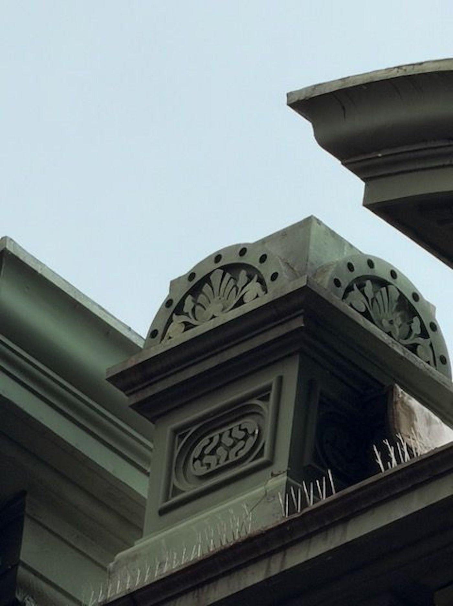
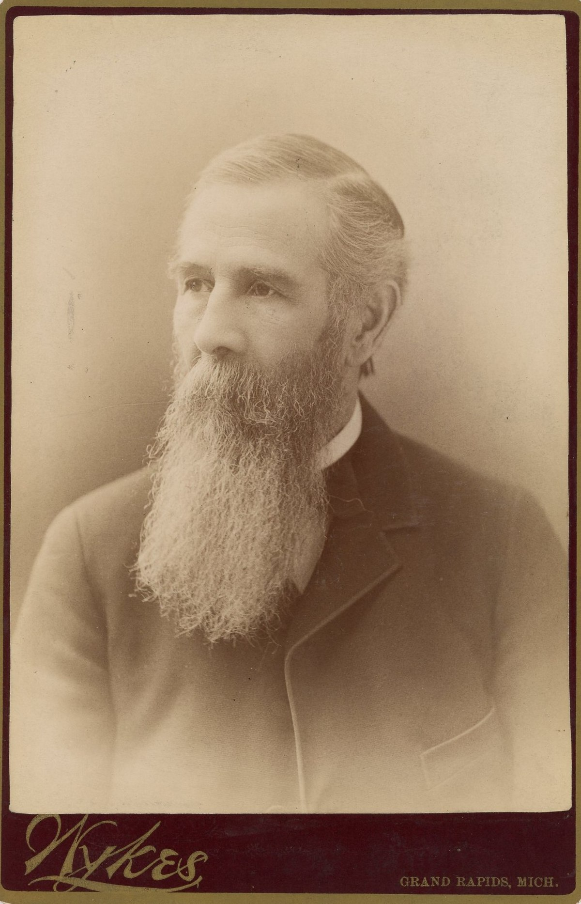
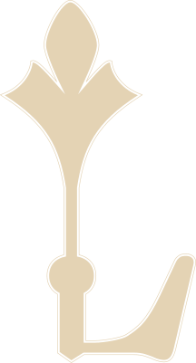

Designed by architect William G. Robinson, Ledyard is a four-story yellow brick Italianate building trimmed in Ionia sandstone, standing at the corner of Ottawa & Pearl for a century and a half.

Ledyard was built for William B. Ledyard (1811–1890), a Grand Rapids banker and investor. His name is still cut into the building's frieze.

A five-cent note issued by Ledyard & Fralick, Bankers — signed more than a decade before the Ledyard Block existed, and payable to bearer "when presented in sums of even dollars."
In 1983, Grand Rapids' second-oldest commercial building became part of the Ledyard Block Historic District — one of seven buildings across a single block, certified under National Register listing #83000878. Ledyard has been in continuous use since it was built in 1874.
From the beginning, Ledyard was built with retail on the ground floor and living quarters on the floors above.
After 150 years, that original use is coming back. CWD Real Estate Investment is bringing residential living back to Ledyard's upper floors — the same way the building has always worked.
